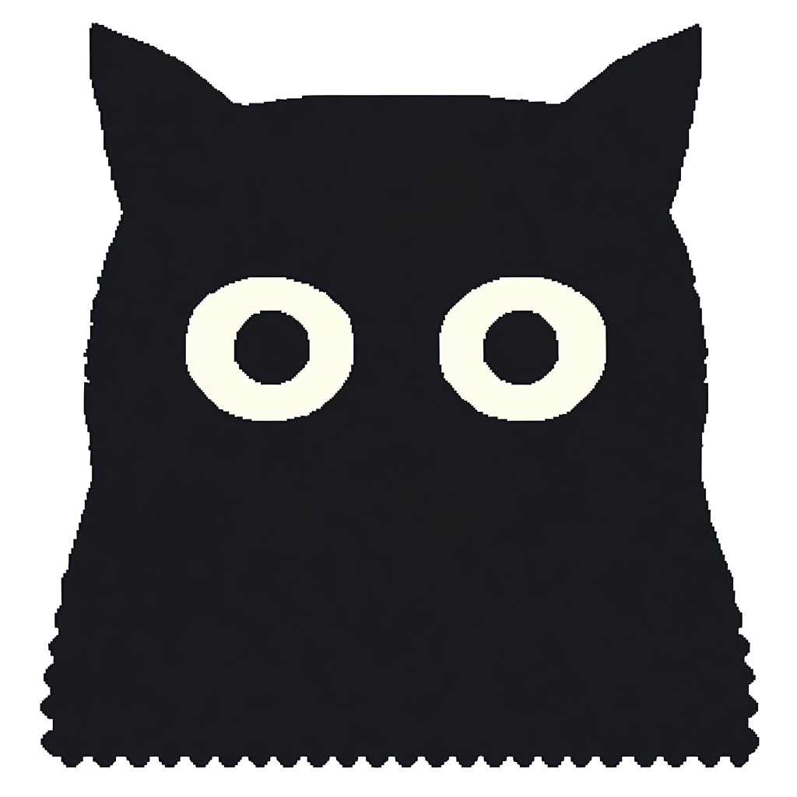

John C. Flournoy, PhD
Computational Research Scientist, Methods Geek, Stats Maven—Currently open to consulting and full-time work
Portrait by Sâmara Lígia
I’m a research scientist who has primarily worked on how psychological and health constructs get measured, how they change over time, and most of all how to model all that well. That work has spanned adolescent development and neuroimaging (at various academic labs), mental health measurement (at an outpatient psychiatry clinic), and how to think about what contributes to the pace of software work (at the Developer Success Lab). For me, the common thread is well-being: how young people develop and thrive, how patients respond in care, and how things get done at work. The unique skills I bring to that are:
- A broad, flexible understanding of methods (latent variable and structural equation models, multilevel and growth models, GAMs, missing data) that informs how I build a research strategy to ask the right question. These days, I often lean Bayesian, using Stan and
brmsfor the flexibility and the posterior1,2 - The ability to create durable, reproducible tools when they don’t already exist (e.g., containers or packages)3,4,5
- A PhD in psychology from the University of Oregon and six years as a developmental neuroscientist at Harvard, working on adolescent development and stress, including building the task-fMRI pipeline for the reward and cognitive control tasks in the Human Connectome Project in Development6,7
- A critical thoughtfulness that leads me to ask things like what a measurement actually means, and what causal story our analysis can actually tell8
1 Flournoy et al. (2024). A precision neuroscience approach to estimating reliability…. NeuroImage.
2 Flournoy et al. (2025). No silver bullets. Empirical Software Engineering.
3 Flournoy (2021). verse-cmdstan. Docker image.
4 Flournoy (2018). riclpmr. R package.
5 Cosme et al. (2018). auto-motion. Software.
6 Flournoy (2024). hcpd_tfMRI. Software.
7 Flournoy (2024). star_digital-phenotyping. Software.
8 Flournoy (2024). Causal inference in developer thriving science. Developer Success Lab.
In practice, that has meant:
- Statistical modeling across very different kinds of data (clinical assessment batteries and neuroimaging, surveys and experiments, and incidental records like Jira tickets9), with appropriate uncertainty carried through from the measurement to the conclusions
- Measurement work across several projects: Bayesian item response models fit to a clinic’s outcome batteries (and shorter forms built from them), tests of whether a scale means the same thing across age groups10 and income levels11 (and an R package for setting the cutoffs those tests use12), and the test-retest reliability of task-fMRI in adolescents scanned up to ten times, a month apart13
- Longitudinal data at very different cadences (several surveys a day, monthly scans, multi-year panels14), modeled so that change within a person isn’t confused with stable differences between people15,16
- Interrogating construct validity from the start rather than assuming it, an approach shaped a lot by Alexandrova’s “A Philosophy for the Science of Well-Being”17
9 Flournoy et al. (2025). No silver bullets. Empirical Software Engineering.
10 Thalmayer et al. (2019). Ethics-relevant values in adulthood. Journal of Personality.
11 Ludwig et al. (2019). Inequality in personality and temporal discounting… Journal of Research in Personality.
12 Flournoy (2018). milav. R package, with simulations of the cutoffs.
13 Flournoy et al. (2024). A precision neuroscience approach to estimating reliability…. NeuroImage.
14 Thalmayer et al. (2019). Ethics-relevant values as antecedents of personality change. Collabra: Psychology.
15 Flournoy (2018, updated 2026). False positives in multilevel models for longitudinal data. Simulation study.
16 Matta et al. (2018). Making an unknown unknown a known unknown. Developmental Cognitive Neuroscience.
17 Alexandrova (2017). A philosophy for the science of well-being. Oxford University Press.
I strive to be effective through this intimate dialogue between our numeric approach, our theory, and our philosophy of the phenomena of interest.
